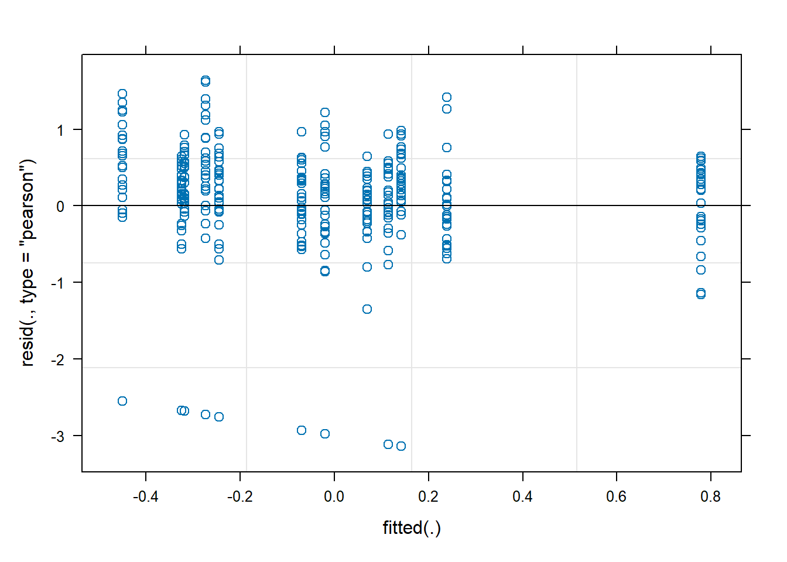
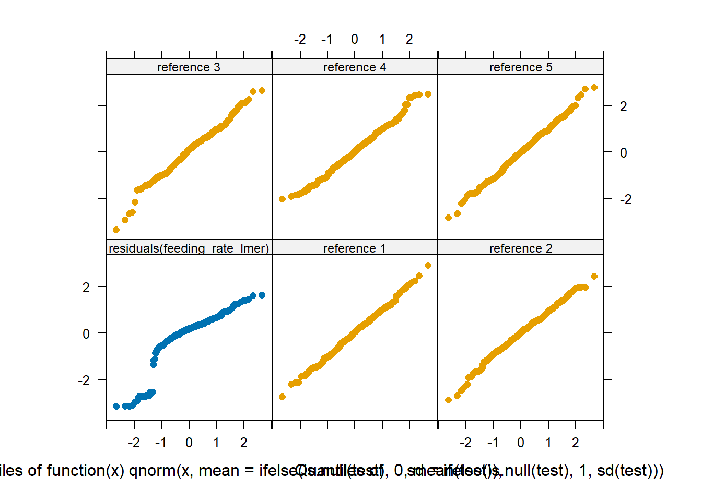
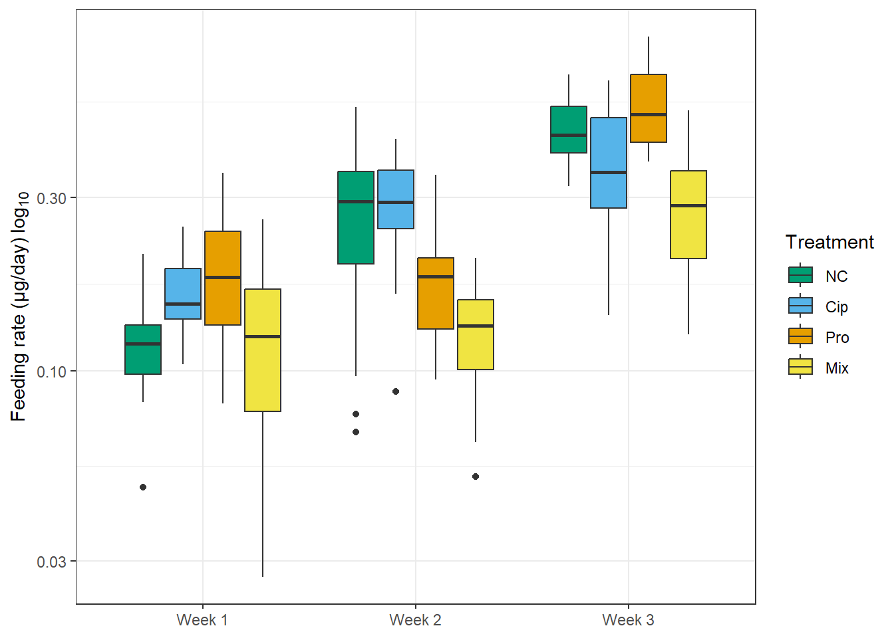
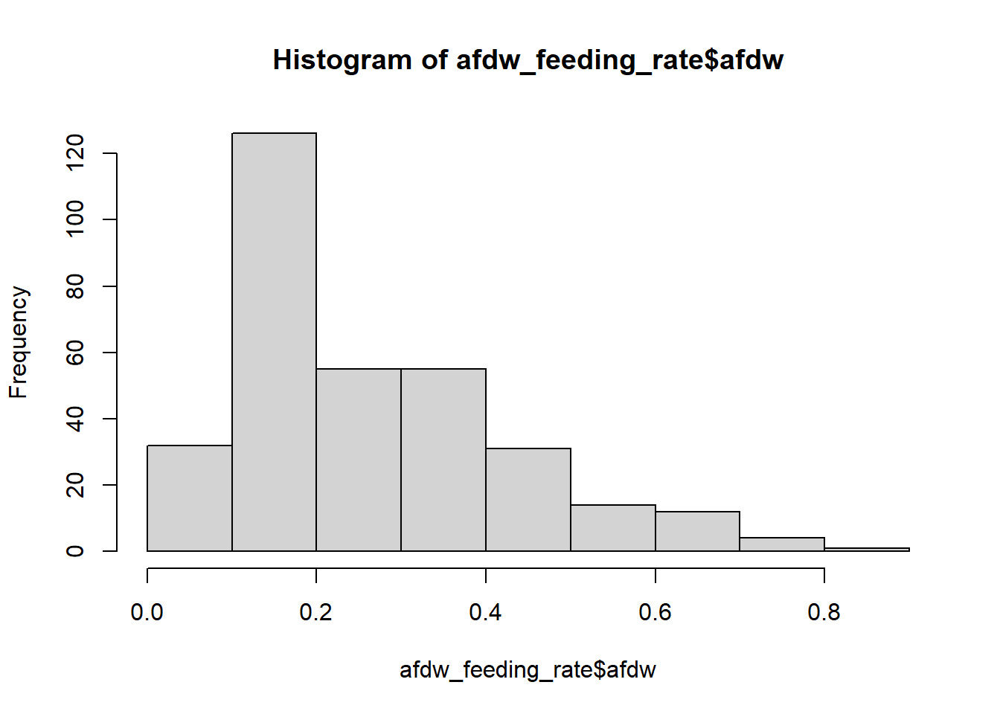
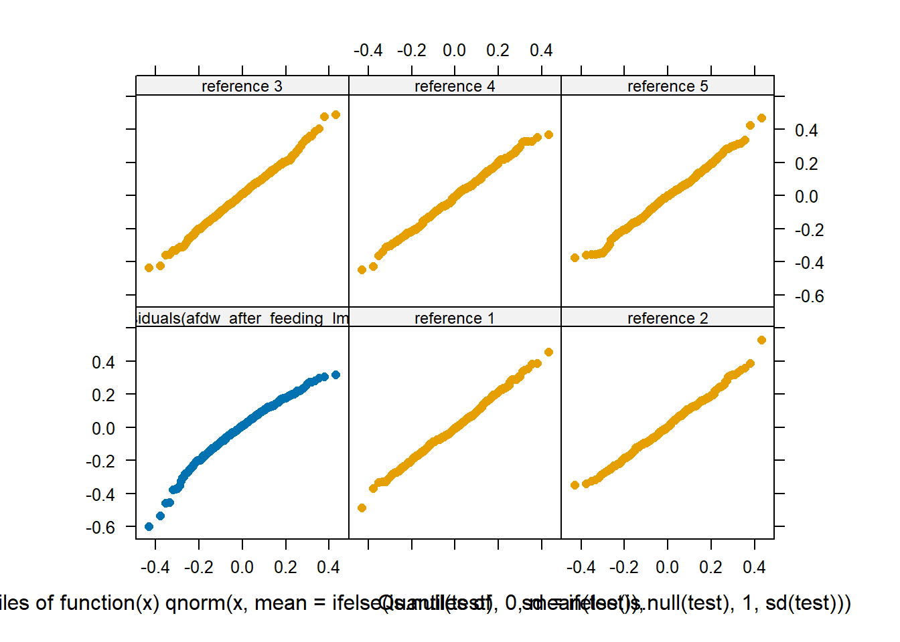

# renv::init()
# renv::snapshot()
library(stats)
library(rstatix)
library(dplyr)
library(tidyverse)
library(tidyr)
library(broom)
library(dunn.test)
library(patchwork)
library(vegan)
library(data.table)
library(ggplot2)
library(ggrepel)
library(gridExtra)
library(stringr)
library(shades)
library(ggpubr)
library(base)
library(ggokabeito)
library(multcomp)
library(car)
library(asbio)
library(plotrix)
library(lmtest)
library(boot)
library(moments)
library(lme4)
library(DAAG)
library(performance)
library(emmeans)Bottom-up effects of an herbicide and an antibiotic on Potamopyrgus antipodarum
Sophie Oster, Verena C. Schreiner, Tobias Schmitt, Patrick Fink, Markus Weitere, Ibrahim Arayoe, Ralf Schulz, Mirco Bundschuh
R script written by Sophie Oster
checked by Verena C. Schreiner
RPTU Kaiserslautern-Landau
Fortstrasse 7
76829 Landau in der Pfalz
GERMANY
Corresponding authors email address:
1) Sophie Oster: oster@rptu.de
2) Mirco Bundschuh: mirco.bundschuh@rptu.de
This study was conducted with four treatments and three time points explanatory variables
- treatment (categorical)
- uncontaminated control (negative control, NC)
- herbicide propyzamide (Pro)
- antibiotic ciprofloxacin (Cip)
- mixture of propyzamide and ciprofloxacin (Mix)
- time.point (categorical)
- week 1
- week 2
- week 3
1 Packages in a reproducible environment
2 Set working directory
prj <- getwd()
setwd(prj)3 Biofilm endpoints
Chlorophyll and ash free dry weight of biofilm after colonisation + chronic contamination of 14 days
Unit chlorophyll a, b & c: µg chlorophyll / cm²
Unit afdw after colonisation: mg / cm²
# insert data
biofilm_endpoints <-
read.table(file.path(prj, "data\\biofilm_endpoints.txt"),
header = TRUE, sep = "\t")
View(biofilm_endpoints)3.1 Chlorophyll
Caclulate mean chla, chlb + chlc of each treatment, to compare in manuscript
#chl a
mean_chlorophyll_a <- biofilm_endpoints %>%
group_by(week, treatment) %>%
summarize(mean_chlorophyll_a = mean(chla))
print(mean_chlorophyll_a)# A tibble: 12 × 3
# Groups: week [3]
week treatment mean_chlorophyll_a
<int> <chr> <dbl>
1 1 Cip 0.157
2 1 Mix 0.189
3 1 NC 0.154
4 1 Pro 0.191
5 2 Cip 0.0954
6 2 Mix 0.0317
7 2 NC 0.181
8 2 Pro 0.0920
9 3 Cip 0.250
10 3 Mix 0.680
11 3 NC 0.586
12 3 Pro 0.629 # chl b
mean_chlorophyll_b <- biofilm_endpoints %>%
group_by(week, treatment) %>%
summarize(mean_chlorophyll_b = mean(chlb))
print(mean_chlorophyll_b)# A tibble: 12 × 3
# Groups: week [3]
week treatment mean_chlorophyll_b
<int> <chr> <dbl>
1 1 Cip 0.0434
2 1 Mix 0.0773
3 1 NC 0.0443
4 1 Pro 0.0487
5 2 Cip 0.0442
6 2 Mix 0.0242
7 2 NC 0.0370
8 2 Pro 0.0353
9 3 Cip 0.0661
10 3 Mix 0.127
11 3 NC 0.105
12 3 Pro 0.0964# chl c
mean_chlorophyll_c <- biofilm_endpoints %>%
group_by(week, treatment) %>%
summarize(mean_chlorophyll_c = mean(chlc))
print(mean_chlorophyll_c)# A tibble: 12 × 3
# Groups: week [3]
week treatment mean_chlorophyll_c
<int> <chr> <dbl>
1 1 Cip 0.0481
2 1 Mix 0.0958
3 1 NC 0.0468
4 1 Pro 0.0522
5 2 Cip 0.0535
6 2 Mix 0.0319
7 2 NC 0.0341
8 2 Pro 0.0440
9 3 Cip 0.0479
10 3 Mix 0.0972
11 3 NC 0.0880
12 3 Pro 0.0858Histogram chlorophyll a, b + c
# chl a
a <- hist(biofilm_endpoints $ chla) 
skewness(biofilm_endpoints $ chla, na.rm = TRUE) [1] 1.601648# chl b
b <- hist(biofilm_endpoints $ chlb) 
skewness(biofilm_endpoints $ chlb, na.rm = TRUE) [1] 1.452618# chl c
c <- hist(biofilm_endpoints $ chlc) 
skewness(biofilm_endpoints $ chlc, na.rm = TRUE) [1] 1.253578All not normal distributed and right skewed -> log10 transformation in model
Model chla
Linear model with treatment and week and their interaction (week:treatment) as explanatory variables.
model_chla <- lm(log10(chla) ~ week + treatment + week:treatment, data = biofilm_endpoints)
drop1(model_chla, test = ‘F’)
# week as factor
biofilm_endpoints $ week <- factor(biofilm_endpoints $ week)
model_chla <- lm(log10(chla) ~ week + treatment + week:treatment, data = biofilm_endpoints)
drop1(model_chla, test = 'F')Single term deletions
Model:
log10(chla) ~ week + treatment + week:treatment
Df Sum of Sq RSS AIC F value Pr(>F)
<none> 1.2564 -96.788
week:treatment 6 0.90254 2.1590 -89.300 2.8733 0.02965 *
---
Signif. codes: 0 '***' 0.001 '**' 0.01 '*' 0.05 '.' 0.1 ' ' 1Interaction week:treatment significant (p=0.02965). Now check differences between treatments within weeks.
chla_inter <- lsmeans(model_chla, ~ treatment | week )
chla_inter_dunn1 <- contrast(chla_inter, 'pairwise')
(chla_inter_dunn_sum1 <- summary(chla_inter_dunn1, infer = TRUE, adjust = 'mvt'))week = 1:
contrast estimate SE df lower.CL upper.CL t.ratio p.value
Cip - Mix -0.1285 0.187 24 -0.644 0.3868 -0.688 0.9008
Cip - NC -0.0231 0.187 24 -0.538 0.4922 -0.124 0.9993
Cip - Pro -0.1161 0.187 24 -0.631 0.3992 -0.622 0.9242
Mix - NC 0.1054 0.187 24 -0.410 0.6207 0.564 0.9417
Mix - Pro 0.0124 0.187 24 -0.503 0.5277 0.066 0.9999
NC - Pro -0.0930 0.187 24 -0.608 0.4223 -0.498 0.9588
week = 2:
contrast estimate SE df lower.CL upper.CL t.ratio p.value
Cip - Mix 0.3553 0.187 24 -0.160 0.8706 1.902 0.2539
Cip - NC -0.3855 0.187 24 -0.901 0.1298 -2.064 0.1936
Cip - Pro -0.0739 0.187 24 -0.589 0.4413 -0.396 0.9785
Mix - NC -0.7408 0.187 24 -1.256 -0.2255 -3.966 0.0031
Mix - Pro -0.4293 0.187 24 -0.945 0.0860 -2.298 0.1264
NC - Pro 0.3116 0.187 24 -0.204 0.8269 1.668 0.3620
week = 3:
contrast estimate SE df lower.CL upper.CL t.ratio p.value
Cip - Mix -0.4446 0.187 24 -0.960 0.0705 -2.380 0.1084
Cip - NC -0.3119 0.187 24 -0.827 0.2032 -1.670 0.3608
Cip - Pro -0.4035 0.187 24 -0.919 0.1116 -2.160 0.1634
Mix - NC 0.1327 0.187 24 -0.382 0.6478 0.710 0.8921
Mix - Pro 0.0411 0.187 24 -0.474 0.5562 0.220 0.9961
NC - Pro -0.0915 0.187 24 -0.607 0.4236 -0.490 0.9606
Results are given on the log10 (not the response) scale.
Confidence level used: 0.95
Conf-level adjustment: mvt method for 6 estimates
P value adjustment: mvt method for 6 tests No significant differences of the treatments within week 1 and 3. Only NC-Mix significant in week 2 (p=0.0029).
Now check for differences between weeks.
anova(model_chla)Analysis of Variance Table
Response: log10(chla)
Df Sum Sq Mean Sq F value Pr(>F)
week 2 3.6638 1.83191 34.9922 7.689e-08 ***
treatment 3 0.3323 0.11076 2.1156 0.12473
week:treatment 6 0.9025 0.15042 2.8733 0.02965 *
Residuals 24 1.2564 0.05235
---
Signif. codes: 0 '***' 0.001 '**' 0.01 '*' 0.05 '.' 0.1 ' ' 1# week variable highly significant (p=7.689e-08)
chla_inter2 <- lsmeans(model_chla, ~ week | treatment)
chla_inter_dunn3 <- contrast(chla_inter2, 'pairwise')
(chla_inter_dunn_sum3 <- summary(chla_inter_dunn3, infer = TRUE, adjust = 'mvt'))treatment = Cip:
contrast estimate SE df lower.CL upper.CL t.ratio p.value
week1 - week2 0.2843 0.187 24 -0.182 0.7508 1.522 0.2987
week1 - week3 -0.2296 0.187 24 -0.696 0.2369 -1.229 0.4479
week2 - week3 -0.5140 0.187 24 -0.980 -0.0475 -2.751 0.0290
treatment = Mix:
contrast estimate SE df lower.CL upper.CL t.ratio p.value
week1 - week2 0.7682 0.187 24 0.302 1.2344 4.112 0.0011
week1 - week3 -0.5458 0.187 24 -1.012 -0.0796 -2.921 0.0195
week2 - week3 -1.3139 0.187 24 -1.780 -0.8477 -7.033 <.0001
treatment = NC:
contrast estimate SE df lower.CL upper.CL t.ratio p.value
week1 - week2 -0.0781 0.187 24 -0.545 0.3887 -0.418 0.9086
week1 - week3 -0.5185 0.187 24 -0.985 -0.0517 -2.775 0.0273
week2 - week3 -0.4404 0.187 24 -0.907 0.0264 -2.357 0.0667
treatment = Pro:
contrast estimate SE df lower.CL upper.CL t.ratio p.value
week1 - week2 0.3265 0.187 24 -0.140 0.7929 1.748 0.2085
week1 - week3 -0.5170 0.187 24 -0.983 -0.0506 -2.767 0.0278
week2 - week3 -0.8435 0.187 24 -1.310 -0.3772 -4.515 0.0004
Results are given on the log10 (not the response) scale.
Confidence level used: 0.95
Conf-level adjustment: mvt method for 3 estimates
P value adjustment: mvt method for 3 tests - NC
- Week 1 & 2 similar
- Week 2 & 3 similar
- difference between week 1 & 3
- Week 1 & 2 similar
- Cip
- Week 1 & 2 similar
- Week 1 & 3 similar
- difference between week 2 & 3
- Week 1 & 2 similar
- Pro
- Week 1 & 2 similar
- differences between week 1 & 3 and 2 & 3
- Week 1 & 2 similar
- Mix
- all weeks different
Week 1 & 2 quite similar, expect of Mix treatment. Week 3 quite different to week 1 & 2 despite of Cip tretment.
Model chlb
model_chlb <- lm(log10(chlb) ~ week + treatment + week:treatment, data = biofilm_endpoints)
drop1(model_chlb, test = 'F')Single term deletions
Model:
log10(chlb) ~ week + treatment + week:treatment
Df Sum of Sq RSS AIC F value Pr(>F)
<none> 0.97703 -105.84
week:treatment 6 0.26855 1.24558 -109.10 1.0995 0.3913No significant differences. Still check for differences between treatments.
chlb_inter <- lsmeans(model_chlb, ~ treatment | week )
chlb_inter_dunn1 <- contrast(chlb_inter, 'pairwise')
(chlb_inter_dunn_sum1 <- summary(chlb_inter_dunn1, infer = TRUE, adjust = 'mvt'))week = 1:
contrast estimate SE df lower.CL upper.CL t.ratio p.value
Cip - Mix -0.27433 0.165 24 -0.729 0.180 -1.665 0.3632
Cip - NC -0.01900 0.165 24 -0.474 0.436 -0.115 0.9994
Cip - Pro -0.05266 0.165 24 -0.507 0.402 -0.320 0.9884
Mix - NC 0.25533 0.165 24 -0.199 0.710 1.550 0.4251
Mix - Pro 0.22167 0.165 24 -0.233 0.676 1.346 0.5442
NC - Pro -0.03366 0.165 24 -0.488 0.421 -0.204 0.9969
week = 2:
contrast estimate SE df lower.CL upper.CL t.ratio p.value
Cip - Mix 0.18670 0.165 24 -0.268 0.641 1.133 0.6731
Cip - NC -0.00461 0.165 24 -0.459 0.450 -0.028 1.0000
Cip - Pro 0.03588 0.165 24 -0.419 0.491 0.218 0.9963
Mix - NC -0.19130 0.165 24 -0.646 0.263 -1.161 0.6562
Mix - Pro -0.15082 0.165 24 -0.606 0.304 -0.916 0.7968
NC - Pro 0.04048 0.165 24 -0.414 0.495 0.246 0.9946
week = 3:
contrast estimate SE df lower.CL upper.CL t.ratio p.value
Cip - Mix -0.27781 0.165 24 -0.732 0.176 -1.686 0.3525
Cip - NC -0.11586 0.165 24 -0.570 0.338 -0.703 0.8948
Cip - Pro -0.15717 0.165 24 -0.611 0.297 -0.954 0.7762
Mix - NC 0.16195 0.165 24 -0.292 0.616 0.983 0.7603
Mix - Pro 0.12064 0.165 24 -0.333 0.575 0.732 0.8832
NC - Pro -0.04131 0.165 24 -0.495 0.413 -0.251 0.9943
Results are given on the log10 (not the response) scale.
Confidence level used: 0.95
Conf-level adjustment: mvt method for 6 estimates
P value adjustment: mvt method for 6 tests No differences between treatments for chlb.
Now check for differences between weeks.
anova(model_chlb)Analysis of Variance Table
Response: log10(chlb)
Df Sum Sq Mean Sq F value Pr(>F)
week 2 1.24370 0.62185 15.2753 5.259e-05 ***
treatment 3 0.06804 0.02268 0.5572 0.6484
week:treatment 6 0.26855 0.04476 1.0995 0.3913
Residuals 24 0.97703 0.04071
---
Signif. codes: 0 '***' 0.001 '**' 0.01 '*' 0.05 '.' 0.1 ' ' 1# week variable highly significant (p=5.259e-05)
chlb_inter2 <- lsmeans(model_chlb, ~ week | treatment)
chlb_inter_dunn3 <- contrast(chlb_inter2, 'pairwise')
(chlb_inter_dunn_sum3 <- summary(chlb_inter_dunn3, infer = TRUE, adjust = 'mvt'))treatment = Cip:
contrast estimate SE df lower.CL upper.CL t.ratio p.value
week1 - week2 0.0629 0.165 24 -0.349 0.4743 0.382 0.9231
week1 - week3 -0.1994 0.165 24 -0.611 0.2120 -1.210 0.4587
week2 - week3 -0.2623 0.165 24 -0.674 0.1491 -1.592 0.2683
treatment = Mix:
contrast estimate SE df lower.CL upper.CL t.ratio p.value
week1 - week2 0.5239 0.165 24 0.112 0.9354 3.180 0.0109
week1 - week3 -0.2029 0.165 24 -0.614 0.2086 -1.232 0.4466
week2 - week3 -0.7268 0.165 24 -1.138 -0.3153 -4.412 0.0005
treatment = NC:
contrast estimate SE df lower.CL upper.CL t.ratio p.value
week1 - week2 0.0773 0.165 24 -0.334 0.4887 0.469 0.8864
week1 - week3 -0.2963 0.165 24 -0.708 0.1152 -1.798 0.1913
week2 - week3 -0.3735 0.165 24 -0.785 0.0379 -2.267 0.0801
treatment = Pro:
contrast estimate SE df lower.CL upper.CL t.ratio p.value
week1 - week2 0.1514 0.165 24 -0.260 0.5632 0.919 0.6338
week1 - week3 -0.3039 0.165 24 -0.716 0.1079 -1.845 0.1768
week2 - week3 -0.4553 0.165 24 -0.867 -0.0435 -2.764 0.0282
Results are given on the log10 (not the response) scale.
Confidence level used: 0.95
Conf-level adjustment: mvt method for 3 estimates
P value adjustment: mvt method for 3 tests Similar results/trends as for chla. Week 1 & 2 quite similar; differences in:
Pro treatment: week 2 & 3
Mix treatment: week 1 & 2; 2 & 3
Model chlc
model_chlc <- lm(log10(chlc) ~ week + treatment + week:treatment, data = biofilm_endpoints)
drop1(model_chlc, test = 'F')Single term deletions
Model:
log10(chlc) ~ week + treatment + week:treatment
Df Sum of Sq RSS AIC F value Pr(>F)
<none> 1.1848 -98.901
week:treatment 6 0.29873 1.4836 -102.807 1.0085 0.443No significant differences. Still check for differences between treatments.
chlc_inter <- lsmeans(model_chlc, ~ treatment | week )
chlc_inter_dunn1 <- contrast(chlc_inter, 'pairwise')
(chlc_inter_dunn_sum1 <- summary(chlc_inter_dunn1, infer = TRUE, adjust = 'mvt'))week = 1:
contrast estimate SE df lower.CL upper.CL t.ratio p.value
Cip - Mix -0.33795 0.181 24 -0.838 0.162 -1.863 0.2700
Cip - NC -0.00342 0.181 24 -0.504 0.497 -0.019 1.0000
Cip - Pro -0.05013 0.181 24 -0.551 0.450 -0.276 0.9924
Mix - NC 0.33453 0.181 24 -0.166 0.835 1.844 0.2782
Mix - Pro 0.28782 0.181 24 -0.213 0.788 1.587 0.4048
NC - Pro -0.04671 0.181 24 -0.547 0.454 -0.257 0.9938
week = 2:
contrast estimate SE df lower.CL upper.CL t.ratio p.value
Cip - Mix 0.17126 0.181 24 -0.329 0.672 0.944 0.7816
Cip - NC 0.13832 0.181 24 -0.362 0.639 0.762 0.8704
Cip - Pro 0.03741 0.181 24 -0.463 0.538 0.206 0.9968
Mix - NC -0.03294 0.181 24 -0.533 0.467 -0.182 0.9978
Mix - Pro -0.13386 0.181 24 -0.634 0.367 -0.738 0.8809
NC - Pro -0.10092 0.181 24 -0.601 0.399 -0.556 0.9439
week = 3:
contrast estimate SE df lower.CL upper.CL t.ratio p.value
Cip - Mix -0.29281 0.181 24 -0.793 0.207 -1.614 0.3900
Cip - NC -0.13817 0.181 24 -0.638 0.362 -0.762 0.8708
Cip - Pro -0.24547 0.181 24 -0.746 0.255 -1.353 0.5396
Mix - NC 0.15464 0.181 24 -0.346 0.655 0.852 0.8289
Mix - Pro 0.04734 0.181 24 -0.453 0.548 0.261 0.9936
NC - Pro -0.10730 0.181 24 -0.608 0.393 -0.591 0.9337
Results are given on the log10 (not the response) scale.
Confidence level used: 0.95
Conf-level adjustment: mvt method for 6 estimates
P value adjustment: mvt method for 6 tests Boxplots chlorophyll a, b + c
# chlorophyll a
chla <- ggplot(data = biofilm_endpoints,
mapping = aes(x = factor(week),
y = chla,
fill = factor(treatment, levels = c("NC", "Cip", "Pro", "Mix")))) +
geom_boxplot() +
scale_fill_manual(values = c("NC" = "#009E73", "Cip" = "#56B4E9", "Pro" = "#E69F00", "Mix" = "#F0E442")) +
scale_color_okabe_ito() +
theme_bw() +
labs(x = NULL , y = expression("Chlorophyll a (µg/cm"^"2"*")"), fill = "Treatment") +
scale_x_discrete(labels = c("Week 1", "Week 2", "Week 3"))
chla 
# save the plot
ggsave(chla,
filename = "chla.png",
path = 'C:\\Users\\Oster Test\\OneDrive\\Desktop\\Promotion\\Bioassays\\Schneckenversuch 2023\\Bottom_up_effects_biofilm_grazer\\output')Saving 7 x 5 in image# chlorophyll b
chlb <- ggplot(data = biofilm_endpoints,
mapping = aes(x = factor(week),
y = chlb,
fill = factor(treatment, levels = c("NC", "Cip", "Pro", "Mix")))) +
geom_boxplot() +
scale_fill_manual(values = c("NC" = "#009E73", "Cip" = "#56B4E9", "Pro" = "#E69F00", "Mix" = "#F0E442")) +
scale_color_okabe_ito() +
theme_bw() +
labs(x = NULL , y = expression("Chlorophyll b (µg/cm"^"2"*")"), fill = "Treatment") +
scale_x_discrete(labels = c("Week 1", "Week 2", "Week 3"))
chlb 
# save the plot
ggsave(chlb,
filename = "chlb.png",
path = 'C:\\Users\\Oster Test\\OneDrive\\Desktop\\Promotion\\Bioassays\\Schneckenversuch 2023\\Bottom_up_effects_biofilm_grazer\\output')Saving 7 x 5 in image# chlorophyll c
chlc <- ggplot(data = biofilm_endpoints,
mapping = aes(x = factor(week),
y = chlc,
fill = factor(treatment, levels = c("NC", "Cip", "Pro", "Mix")))) +
geom_boxplot() +
scale_fill_manual(values = c("NC" = "#009E73", "Cip" = "#56B4E9", "Pro" = "#E69F00", "Mix" = "#F0E442")) +
scale_color_okabe_ito() +
theme_bw() +
labs(x = NULL , y = expression("Chlorophyll c (µg/cm"^"2"*")"), fill = "Treatment") +
scale_x_discrete(labels = c("Week 1", "Week 2", "Week 3"))
chlc 
# save the plot
ggsave(chlc,
filename = "chlc.png",
path = 'C:\\Users\\Oster Test\\OneDrive\\Desktop\\Promotion\\Bioassays\\Schneckenversuch 2023\\Bottom_up_effects_biofilm_grazer\\output')Saving 7 x 5 in image3.2 AFDW after colonisation
Calculate mean afdw of each treatment for manuscript.
mean_afdw_after_colonisation <- biofilm_endpoints %>%
group_by(week, treatment) %>%
summarize(mean_afdw_after_colonisation = mean(afdw_after_colonisation))`summarise()` has grouped output by 'week'. You can override using the
`.groups` argument.print(mean_afdw_after_colonisation)# A tibble: 12 × 3
# Groups: week [3]
week treatment mean_afdw_after_colonisation
<fct> <chr> <dbl>
1 1 Cip 0.0785
2 1 Mix 0.0666
3 1 NC 0.0837
4 1 Pro 0.135
5 2 Cip 0.109
6 2 Mix 0.0785
7 2 NC 0.215
8 2 Pro 0.0699
9 3 Cip 0.188
10 3 Mix 0.280
11 3 NC 0.520
12 3 Pro 0.474 Histogram afdw after colonisation
hist(biofilm_endpoints $ afdw_after_colonisation) 
skewness(biofilm_endpoints $ afdw_after_colonisation, na.rm = TRUE) [1] 1.433642Not normal distributed and right skewed. Log10 transformation for model
Model afdw after colonisation
Linear model with treatment and week and their interaction (week:treatment) as explanatory variables.
model_afdw_after_colonisation <- lm(log10(afdw_after_colonisation) ~ week + treatment + week:treatment, data = biofilm_endpoints)
drop1(model_afdw_after_colonisation, test = 'F')Single term deletions
Model:
log10(afdw_after_colonisation) ~ week + treatment + week:treatment
Df Sum of Sq RSS AIC F value Pr(>F)
<none> 0.49635 -130.22
week:treatment 6 0.46424 0.96059 -118.45 3.7412 0.009063 **
---
Signif. codes: 0 '***' 0.001 '**' 0.01 '*' 0.05 '.' 0.1 ' ' 1No significant differences. Still check differences between treatments within weeks.
afdw_after_colonisation_inter <- lsmeans(model_afdw_after_colonisation, ~ treatment | week )
afdw_after_colonisation_inter_dunn1 <- contrast(afdw_after_colonisation_inter, 'pairwise')
(afdw_after_colonisation_inter_dunn_sum1 <- summary(afdw_after_colonisation_inter_dunn1, infer = TRUE, adjust = 'mvt'))week = 1:
contrast estimate SE df lower.CL upper.CL t.ratio p.value
Cip - Mix 0.0646 0.117 24 -0.259 0.3885 0.550 0.9457
Cip - NC -0.0310 0.117 24 -0.355 0.2929 -0.264 0.9934
Cip - Pro -0.2277 0.117 24 -0.552 0.0962 -1.939 0.2387
Mix - NC -0.0956 0.117 24 -0.420 0.2284 -0.814 0.8472
Mix - Pro -0.2923 0.117 24 -0.616 0.0317 -2.489 0.0874
NC - Pro -0.1967 0.117 24 -0.521 0.1273 -1.675 0.3581
week = 2:
contrast estimate SE df lower.CL upper.CL t.ratio p.value
Cip - Mix 0.1341 0.117 24 -0.190 0.4581 1.142 0.6677
Cip - NC -0.2737 0.117 24 -0.598 0.0503 -2.331 0.1193
Cip - Pro 0.1747 0.117 24 -0.149 0.4987 1.488 0.4601
Mix - NC -0.4078 0.117 24 -0.732 -0.0838 -3.473 0.0099
Mix - Pro 0.0406 0.117 24 -0.283 0.3646 0.346 0.9855
NC - Pro 0.4484 0.117 24 0.124 0.7723 3.818 0.0044
week = 3:
contrast estimate SE df lower.CL upper.CL t.ratio p.value
Cip - Mix -0.1194 0.117 24 -0.443 0.2047 -1.017 0.7414
Cip - NC -0.4240 0.117 24 -0.748 -0.1000 -3.611 0.0072
Cip - Pro -0.3942 0.117 24 -0.718 -0.0701 -3.357 0.0131
Mix - NC -0.3046 0.117 24 -0.629 0.0194 -2.594 0.0707
Mix - Pro -0.2748 0.117 24 -0.599 0.0492 -2.340 0.1166
NC - Pro 0.0298 0.117 24 -0.294 0.3539 0.254 0.9941
Results are given on the log10 (not the response) scale.
Confidence level used: 0.95
Conf-level adjustment: mvt method for 6 estimates
P value adjustment: mvt method for 6 tests Now check for differences within weeks.
anova(model_afdw_after_colonisation)Analysis of Variance Table
Response: log10(afdw_after_colonisation)
Df Sum Sq Mean Sq F value Pr(>F)
week 2 2.31759 1.15880 56.0312 9.072e-10 ***
treatment 3 0.43663 0.14554 7.0375 0.001477 **
week:treatment 6 0.46424 0.07737 3.7412 0.009063 **
Residuals 24 0.49635 0.02068
---
Signif. codes: 0 '***' 0.001 '**' 0.01 '*' 0.05 '.' 0.1 ' ' 1# week variable highly significant (p=2.541e-07)
afdw_after_colonisation_inter2 <- lsmeans(model_afdw_after_colonisation, ~ week | treatment)
afdw_after_colonisation_inter_dunn3 <- contrast(afdw_after_colonisation_inter2, 'pairwise')
(afdw_after_colonisation_inter_dunn_sum3 <- summary(afdw_after_colonisation_inter_dunn3, infer = TRUE, adjust = 'mvt'))treatment = Cip:
contrast estimate SE df lower.CL upper.CL t.ratio p.value
week1 - week2 -0.1304 0.117 24 -0.4237 0.1629 -1.111 0.5168
week1 - week3 -0.3852 0.117 24 -0.6785 -0.0919 -3.281 0.0085
week2 - week3 -0.2548 0.117 24 -0.5481 0.0385 -2.170 0.0972
treatment = Mix:
contrast estimate SE df lower.CL upper.CL t.ratio p.value
week1 - week2 -0.0609 0.117 24 -0.3540 0.2323 -0.518 0.8631
week1 - week3 -0.5691 0.117 24 -0.8623 -0.2760 -4.847 0.0001
week2 - week3 -0.5083 0.117 24 -0.8014 -0.2151 -4.329 0.0006
treatment = NC:
contrast estimate SE df lower.CL upper.CL t.ratio p.value
week1 - week2 -0.3730 0.117 24 -0.6661 -0.0800 -3.177 0.0109
week1 - week3 -0.7782 0.117 24 -1.0712 -0.4851 -6.627 <.0001
week2 - week3 -0.4051 0.117 24 -0.6982 -0.1121 -3.450 0.0058
treatment = Pro:
contrast estimate SE df lower.CL upper.CL t.ratio p.value
week1 - week2 0.2720 0.117 24 -0.0212 0.5651 2.316 0.0725
week1 - week3 -0.5517 0.117 24 -0.8448 -0.2585 -4.698 0.0003
week2 - week3 -0.8236 0.117 24 -1.1168 -0.5305 -7.015 <.0001
Results are given on the log10 (not the response) scale.
Confidence level used: 0.95
Conf-level adjustment: mvt method for 3 estimates
P value adjustment: mvt method for 3 tests Boxplot afdw after colonisation
afdw_after_colonisation_boxplot <- ggplot(data = biofilm_endpoints,
mapping = aes(x = factor(week),
y = afdw_after_colonisation,
fill = factor(treatment, levels = c("NC", "Cip", "Pro", "Mix")))) +
geom_boxplot() +
scale_fill_manual(values = c("NC" = "#009E73", "Cip" = "#56B4E9", "Pro" = "#E69F00", "Mix" = "#F0E442")) +
scale_color_okabe_ito() +
theme_bw() +
labs(x = NULL , y = expression("Ash free dry weight (mg/cm"^"2"*")"), fill = "Treatment") +
scale_x_discrete(labels = c("Week 1", "Week 2", "Week 3"))
afdw_after_colonisation_boxplot 
# @ VS: Hier auch log Skala, um die Daten besser zu sehen?
# save the plot
ggsave(afdw_after_colonisation_boxplot,
filename = "afdw_after_colonisation.png",
path = 'C:\\Users\\Oster Test\\OneDrive\\Desktop\\Promotion\\Bioassays\\Schneckenversuch 2023\\Bottom_up_effects_biofilm_grazer\\output')Saving 7 x 5 in image4 Feeding rate snails and ash free dry weight after feeding
NA’s due to missing snail and zero values of feeding rate due to no measurable feeding in respective week
Unit feeding rate: µg / day and unit ash free dry weight (afdw): mg / cm²
Column “used_for_FA_analysis” highlights the ten snails used for FA analyses for each treatment
# insert data
afdw_feeding_rate <-
read.table(file.path(prj, "data\\feeding_assay_afdw_feeding_rate.txt"),
header = TRUE, sep = "\t")
View(afdw_feeding_rate)4.1 Feeding rate snails
Calculate mean feeding rate for each week
mean_feeding_rate <- afdw_feeding_rate %>%
group_by(week, treatment) %>%
summarize(mean_feeding_rate = mean(feeding_rate))`summarise()` has grouped output by 'week'. You can override using the
`.groups` argument.print(mean_feeding_rate)# A tibble: 12 × 3
# Groups: week [3]
week treatment mean_feeding_rate
<int> <chr> <dbl>
1 1 Cip NA
2 1 Mix 2.49
3 1 NC NA
4 1 Pro NA
5 2 Cip NA
6 2 Mix 0.841
7 2 NC NA
8 2 Pro NA
9 3 Cip NA
10 3 Mix 1.55
11 3 NC NA
12 3 Pro NA Histogram feeding rate
hist(afdw_feeding_rate $ feeding_rate) 
skewness(afdw_feeding_rate $ feeding_rate, na.rm = TRUE) [1] 3.865973Feeding rate variable not normal distributed and right skewed -> log10 transformation for model
Model feeding rate
# week and beaker as factor
afdw_feeding_rate $ week <- factor(afdw_feeding_rate $ week)
afdw_feeding_rate $ beaker <- factor(afdw_feeding_rate $ beaker)
# log10 transformation; adding 0.001 to variable for samples with feeding rate = 0
afdw_feeding_rate <- afdw_feeding_rate %>%
mutate(log_feeding_rate = log10(feeding_rate + 0.001))
# response variable: log_feeding_rate
# fixed effects: week + treatment + week:treatment
# random effect with constant intercept: (1|beaker)
feeding_rate_lmer <- lmer(log_feeding_rate ~ week + treatment + week:treatment + (1|beaker), data = afdw_feeding_rate)boundary (singular) fit: see help('isSingular')feeding_rate_lmer %>% r2Warning: Can't compute random effect variances. Some variance components equal
zero. Your model may suffer from singularity (see `?lme4::isSingular`
and `?performance::check_singularity`).
Solution: Respecify random structure! You may also decrease the
`tolerance` level to enforce the calculation of random effect variances.Random effect variances not available. Returned R2 does not account for random effects.# R2 for Mixed Models
Conditional R2: NA
Marginal R2: 0.108# Conditional R2: explained portion of the variance of the fixed and random effect together
# Marginal R2: declared share of the variance of the fixed components alone
plot(feeding_rate_lmer) # point cloud looks evenly distributed --> normal distribution
qreference(residuals(feeding_rate_lmer)) # normality
drop1(feeding_rate_lmer, test = 'Chisq')boundary (singular) fit: see help('isSingular')Single term deletions
Model:
log_feeding_rate ~ week + treatment + week:treatment + (1 | beaker)
npar AIC LRT Pr(Chi)
<none> 891.73
week:treatment 6 903.01 23.285 0.0007066 ***
---
Signif. codes: 0 '***' 0.001 '**' 0.01 '*' 0.05 '.' 0.1 ' ' 1# interaction of timepoint (week) and treatment highly significant
# now check at which timepoints is a difference between treatments
anova(feeding_rate_lmer)Analysis of Variance Table
npar Sum Sq Mean Sq F value
week 2 8.3221 4.1611 4.9990
treatment 3 5.6002 1.8667 2.2427
week:treatment 6 19.3512 3.2252 3.8747# conduct Tukey HSD-test for pairwise comparisons
feeding_rate_tukey <- lsmeans(feeding_rate_lmer, ~ treatment | week)
feeding_rate_tukeyweek = 1:
treatment lsmean SE df lower.CL upper.CL
Cip -0.3182 0.182 318 -0.677 0.04080
Mix -0.0200 0.167 318 -0.348 0.30770
NC 0.2386 0.172 318 -0.101 0.57781
Pro 0.7784 0.176 318 0.433 1.12384
week = 2:
treatment lsmean SE df lower.CL upper.CL
Cip -0.4496 0.182 318 -0.809 -0.09064
Mix -0.3245 0.167 318 -0.652 0.00321
NC 0.1426 0.172 318 -0.197 0.48178
Pro -0.2442 0.176 318 -0.590 0.10124
week = 3:
treatment lsmean SE df lower.CL upper.CL
Cip 0.1146 0.182 318 -0.244 0.47357
Mix 0.0703 0.167 318 -0.257 0.39801
NC -0.0691 0.172 318 -0.408 0.27011
Pro -0.2726 0.176 318 -0.618 0.07281
Degrees-of-freedom method: kenward-roger
Confidence level used: 0.95 feeding_rate_tukey1 <- contrast(feeding_rate_tukey, 'pairwise')
feeding_rate_tukey1week = 1:
contrast estimate SE df t.ratio p.value
Cip - Mix -0.2982 0.247 318 -1.207 0.6229
Cip - NC -0.5568 0.251 318 -2.218 0.1206
Cip - Pro -1.0966 0.253 318 -4.330 0.0001
Mix - NC -0.2586 0.240 318 -1.079 0.7028
Mix - Pro -0.7984 0.242 318 -3.299 0.0059
NC - Pro -0.5398 0.246 318 -2.194 0.1272
week = 2:
contrast estimate SE df t.ratio p.value
Cip - Mix -0.1251 0.247 318 -0.506 0.9575
Cip - NC -0.5922 0.251 318 -2.359 0.0873
Cip - Pro -0.2054 0.253 318 -0.811 0.8491
Mix - NC -0.4671 0.240 318 -1.948 0.2102
Mix - Pro -0.0803 0.242 318 -0.332 0.9874
NC - Pro 0.3868 0.246 318 1.572 0.3963
week = 3:
contrast estimate SE df t.ratio p.value
Cip - Mix 0.0443 0.247 318 0.179 0.9980
Cip - NC 0.1837 0.251 318 0.732 0.8843
Cip - Pro 0.3872 0.253 318 1.529 0.4213
Mix - NC 0.1394 0.240 318 0.581 0.9376
Mix - Pro 0.3429 0.242 318 1.417 0.4897
NC - Pro 0.2035 0.246 318 0.827 0.8416
Degrees-of-freedom method: kenward-roger
P value adjustment: tukey method for comparing a family of 4 estimates feeding_rate_summary <- summary(feeding_rate_tukey1, infer = TRUE, adjust = 'mvt')
feeding_rate_summaryweek = 1:
contrast estimate SE df lower.CL upper.CL t.ratio p.value
Cip - Mix -0.2982 0.247 318 -0.937 0.3403 -1.207 0.6228
Cip - NC -0.5568 0.251 318 -1.206 0.0920 -2.218 0.1204
Cip - Pro -1.0966 0.253 318 -1.751 -0.4422 -4.330 0.0001
Mix - NC -0.2586 0.240 318 -0.878 0.3609 -1.079 0.7027
Mix - Pro -0.7984 0.242 318 -1.424 -0.1730 -3.299 0.0062
NC - Pro -0.5398 0.246 318 -1.176 0.0961 -2.194 0.1272
week = 2:
contrast estimate SE df lower.CL upper.CL t.ratio p.value
Cip - Mix -0.1251 0.247 318 -0.763 0.5127 -0.506 0.9575
Cip - NC -0.5922 0.251 318 -1.240 0.0559 -2.359 0.0873
Cip - Pro -0.2054 0.253 318 -0.859 0.4483 -0.811 0.8491
Mix - NC -0.4671 0.240 318 -1.086 0.1518 -1.948 0.2101
Mix - Pro -0.0803 0.242 318 -0.705 0.5445 -0.332 0.9874
NC - Pro 0.3868 0.246 318 -0.248 1.0220 1.572 0.3961
week = 3:
contrast estimate SE df lower.CL upper.CL t.ratio p.value
Cip - Mix 0.0443 0.247 318 -0.594 0.6822 0.179 0.9980
Cip - NC 0.1837 0.251 318 -0.464 0.8319 0.732 0.8843
Cip - Pro 0.3872 0.253 318 -0.267 1.0410 1.529 0.4212
Mix - NC 0.1394 0.240 318 -0.480 0.7584 0.581 0.9376
Mix - Pro 0.3429 0.242 318 -0.282 0.9678 1.417 0.4895
NC - Pro 0.2035 0.246 318 -0.432 0.8389 0.827 0.8415
Degrees-of-freedom method: kenward-roger
Confidence level used: 0.95
Conf-level adjustment: mvt method for 6 estimates
P value adjustment: mvt method for 6 tests Boxplot feeding rate after 7/14/21 days
afdw_after_feeding_boxplot <- ggplot(data = afdw_feeding_rate,
mapping = aes(x = factor(week),
y = afdw,
fill = factor(treatment, levels = c("NC", "Cip", "Pro", "Mix")))) +
geom_boxplot() +
scale_fill_manual(values = c("NC" = "#009E73", "Cip" = "#56B4E9", "Pro" = "#E69F00", "Mix" = "#F0E442")) +
scale_color_okabe_ito() +
theme_bw() +
labs(x = NULL , fill = "Treatment") +
scale_x_discrete(labels = c("Week 1", "Week 2", "Week 3")) +
scale_y_continuous(trans = "log10") +
labs(y = expression("Feeding rate (µg/day)" ~ log[10]))
afdw_after_feeding_boxplotWarning: Removed 30 rows containing non-finite values (`stat_boxplot()`).
# save the plot
ggsave(afdw_after_feeding_boxplot,
filename = "afdw_after_feeding_boxplot.png",
path = 'C:\\Users\\Oster Test\\OneDrive\\Desktop\\Promotion\\Bioassays\\Schneckenversuch 2023\\Bottom_up_effects_biofilm_grazer\\output')Saving 7 x 5 in imageWarning: Removed 30 rows containing non-finite values (`stat_boxplot()`).4.2 AFDW after feeding
Calculate mean of afdw after feeding for each week
mean_afdw_after_feeding <- afdw_feeding_rate %>%
group_by(week, treatment) %>%
summarize(mean_afdw_after_feeding = mean(afdw))`summarise()` has grouped output by 'week'. You can override using the
`.groups` argument.print(mean_afdw_after_feeding)# A tibble: 12 × 3
# Groups: week [3]
week treatment mean_afdw_after_feeding
<fct> <chr> <dbl>
1 1 Cip NA
2 1 Mix 0.129
3 1 NC NA
4 1 Pro NA
5 2 Cip NA
6 2 Mix 0.130
7 2 NC NA
8 2 Pro NA
9 3 Cip NA
10 3 Mix 0.292
11 3 NC NA
12 3 Pro NA Histogram afdw after feeding
hist(afdw_feeding_rate $ afdw) 
skewness(afdw_feeding_rate $ afdw, na.rm = TRUE) [1] 1.052855shapiro.test(afdw_feeding_rate $ afdw)
Shapiro-Wilk normality test
data: afdw_feeding_rate$afdw
W = 0.90351, p-value = 1.164e-13AFDW after feeding not normal distributed. Log10 transformation for model.
Model afdw after feeding
# log10 transformation; adding 0.001 to variable for samples with feeding rate = 0
afdw_feeding_rate <- afdw_feeding_rate %>%
mutate(log_afdw = log10(afdw + 0.001))
# @ VS: Die Addition von 0.001 auch bei afdw machen, obwohl es keine 0-Werte gibt?
# response variable: log_afdw
# fixed effects: week + treatment + week:treatment
# random effect with constant intercept: (1|beaker)
afdw_after_feeding_lmer <- lmer(log_afdw ~ week + treatment + week:treatment + (1|beaker), data = afdw_feeding_rate)
afdw_after_feeding_lmer %>% r2# R2 for Mixed Models
Conditional R2: 0.680
Marginal R2: 0.652# Conditional R2: explained portion of the variance of the fixed and random effect together
# Marginal R2: declared share of the variance of the fixed components alone
plot(afdw_after_feeding_lmer) # point cloud looks evenly distributed --> normal distribution
qreference(residuals(afdw_after_feeding_lmer)) # normality
drop1(afdw_after_feeding_lmer, test = 'Chisq')boundary (singular) fit: see help('isSingular')Single term deletions
Model:
log_afdw ~ week + treatment + week:treatment + (1 | beaker)
npar AIC LRT Pr(Chi)
<none> -261.21
week:treatment 6 -211.06 62.152 1.643e-11 ***
---
Signif. codes: 0 '***' 0.001 '**' 0.01 '*' 0.05 '.' 0.1 ' ' 1# interaction of timepoint (week) and treatment highly significant
# now check at which timepoints is a difference between treatments
anova(afdw_after_feeding_lmer)Analysis of Variance Table
npar Sum Sq Mean Sq F value
week 2 11.5445 5.7722 246.883
treatment 3 1.9791 0.6597 28.216
week:treatment 6 1.6158 0.2693 11.518# conduct Tukey HSD-test for pairwise comparisons
afdw_tukey <- lsmeans(afdw_after_feeding_lmer, ~ treatment | week)
afdw_tukeyweek = 1:
treatment lsmean SE df lower.CL upper.CL
Cip -0.791 0.0319 314 -0.854 -0.729
Mix -0.936 0.0291 314 -0.994 -0.879
NC -0.934 0.0302 314 -0.993 -0.874
Pro -0.757 0.0307 314 -0.818 -0.697
week = 2:
treatment lsmean SE df lower.CL upper.CL
Cip -0.559 0.0319 314 -0.622 -0.496
Mix -0.906 0.0291 314 -0.963 -0.848
NC -0.609 0.0302 314 -0.669 -0.550
Pro -0.753 0.0307 314 -0.814 -0.693
week = 3:
treatment lsmean SE df lower.CL upper.CL
Cip -0.446 0.0319 314 -0.508 -0.383
Mix -0.563 0.0291 314 -0.620 -0.505
NC -0.344 0.0302 314 -0.403 -0.284
Pro -0.276 0.0307 314 -0.336 -0.215
Degrees-of-freedom method: kenward-roger
Confidence level used: 0.95 afdw_tukey1 <- contrast(afdw_tukey, 'pairwise')
afdw_tukeyweek = 1:
treatment lsmean SE df lower.CL upper.CL
Cip -0.791 0.0319 314 -0.854 -0.729
Mix -0.936 0.0291 314 -0.994 -0.879
NC -0.934 0.0302 314 -0.993 -0.874
Pro -0.757 0.0307 314 -0.818 -0.697
week = 2:
treatment lsmean SE df lower.CL upper.CL
Cip -0.559 0.0319 314 -0.622 -0.496
Mix -0.906 0.0291 314 -0.963 -0.848
NC -0.609 0.0302 314 -0.669 -0.550
Pro -0.753 0.0307 314 -0.814 -0.693
week = 3:
treatment lsmean SE df lower.CL upper.CL
Cip -0.446 0.0319 314 -0.508 -0.383
Mix -0.563 0.0291 314 -0.620 -0.505
NC -0.344 0.0302 314 -0.403 -0.284
Pro -0.276 0.0307 314 -0.336 -0.215
Degrees-of-freedom method: kenward-roger
Confidence level used: 0.95 afdw_summary <- summary(afdw_tukey1, infer = TRUE, adjust = 'mvt')
afdw_summaryweek = 1:
contrast estimate SE df lower.CL upper.CL t.ratio p.value
Cip - Mix 0.14503 0.0432 314 0.03340 0.2567 3.357 0.0046
Cip - NC 0.14234 0.0439 314 0.02891 0.2558 3.242 0.0070
Cip - Pro -0.03413 0.0443 314 -0.14854 0.0803 -0.771 0.8676
Mix - NC -0.00269 0.0419 314 -0.11101 0.1056 -0.064 0.9999
Mix - Pro -0.17916 0.0423 314 -0.28851 -0.0698 -4.233 0.0002
NC - Pro -0.17647 0.0430 314 -0.28765 -0.0653 -4.101 0.0003
week = 2:
contrast estimate SE df lower.CL upper.CL t.ratio p.value
Cip - Mix 0.34644 0.0432 314 0.23478 0.4581 8.019 <.0001
Cip - NC 0.05002 0.0439 314 -0.06344 0.1635 1.139 0.6653
Cip - Pro 0.19399 0.0443 314 0.07954 0.3084 4.381 0.0001
Mix - NC -0.29642 0.0419 314 -0.40478 -0.1881 -7.071 <.0001
Mix - Pro -0.15245 0.0423 314 -0.26184 -0.0431 -3.602 0.0020
NC - Pro 0.14397 0.0430 314 0.03275 0.2552 3.346 0.0048
week = 3:
contrast estimate SE df lower.CL upper.CL t.ratio p.value
Cip - Mix 0.11718 0.0432 314 0.00554 0.2288 2.712 0.0358
Cip - NC -0.10178 0.0439 314 -0.21522 0.0117 -2.319 0.0959
Cip - Pro -0.16991 0.0443 314 -0.28433 -0.0555 -3.837 0.0008
Mix - NC -0.21896 0.0419 314 -0.32728 -0.1106 -5.223 <.0001
Mix - Pro -0.28709 0.0423 314 -0.39644 -0.1777 -6.783 <.0001
NC - Pro -0.06813 0.0430 314 -0.17932 0.0431 -1.583 0.3895
Degrees-of-freedom method: kenward-roger
Confidence level used: 0.95
Conf-level adjustment: mvt method for 6 estimates
P value adjustment: mvt method for 6 tests Boxplot afdw after feeding of 7/14/21 days
afdw_after_feeding_boxplot <- ggplot(data = afdw_feeding_rate,
mapping = aes(x = factor(week),
y = afdw,
fill = factor(treatment, levels = c("NC", "Cip", "Pro", "Mix")))) +
geom_boxplot() +
scale_fill_manual(values = c("NC" = "#009E73", "Cip" = "#56B4E9", "Pro" = "#E69F00", "Mix" = "#F0E442")) +
scale_color_okabe_ito() +
theme_bw() +
labs(x = NULL , fill = "Treatment") +
scale_x_discrete(labels = c("Week 1", "Week 2", "Week 3")) +
scale_y_continuous(trans = "log10") +
labs(y = expression("AFDW (mg/cm"^"2"*")" ~ log[10]))
afdw_after_feeding_boxplotWarning: Removed 30 rows containing non-finite values (`stat_boxplot()`).
# save the plot
ggsave(afdw_after_feeding_boxplot,
filename = "afdw_after_feeding_boxplot.png",
path = 'C:\\Users\\Oster Test\\OneDrive\\Desktop\\Promotion\\Bioassays\\Schneckenversuch 2023\\Bottom_up_effects_biofilm_grazer\\output')Saving 7 x 5 in imageWarning: Removed 30 rows containing non-finite values (`stat_boxplot()`).5 Fatty acid composition snails
6 Fatty acid composition biofilm
Mach ich dann so wie Fatty acid composition snails
7 Temperature and light conditions
7.1 Biofilm colonisation and contamination
# insert data
colonisation_temp_light <-
read.table(file.path(prj, "data\\colonisation_temp_light.txt"),
header = TRUE, sep = "\t")
View(colonisation_temp_light)
# average temperature
mean(colonisation_temp_light $ temperature_colonisation)[1] 18.28751# 18.28751 °C
# mean light intensity
# filter only daytime
average_light_intensity_colonisation <- colonisation_temp_light %>%
dplyr::filter(light_intensity_colonisation > 0) %>%
summarize(average_light_intensity_colonisation = mean(light_intensity_colonisation))
print(average_light_intensity_colonisation) average_light_intensity_colonisation
1 14019.26# 14019.26 lux
# temperature plot
# add a small amount of random noise to the y-values
colonisation_temp_light $ temperature_colonisation <- jitter(colonisation_temp_light $ temperature_colonisation)
t2 <- ggplot(
data = colonisation_temp_light,
mapping = aes( x = day, y = temperature_colonisation, color = time_of_day)) +
geom_point(alpha = 0.5) + # Individual measurements with transparency
geom_smooth() +
labs(
title = "Temperature profile during biofilm colonisation",
x = "Day", y = "Temperature (°C)"
) +
theme_bw() +
scale_x_continuous(breaks = seq(0, 77, by = 5)) +
scale_color_continuous(
name = "Time of Day",
breaks = c(0, 5, 10, 15, 20),
labels = c("0:00 am", "05:00 am", "10:00 am", "03:00 pm", "08:00 pm"),
limits = c(0, 22),
)
t2 `geom_smooth()` using method = 'gam' and formula = 'y ~ s(x, bs = "cs")'Warning: The following aesthetics were dropped during statistical transformation: colour
ℹ This can happen when ggplot fails to infer the correct grouping structure in
the data.
ℹ Did you forget to specify a `group` aesthetic or to convert a numerical
variable into a factor?
# save the plot
ggsave(t2,
filename = "temperature_colonisation.png",
path = 'C:\\Users\\Oster Test\\OneDrive\\Desktop\\Promotion\\Bioassays\\Schneckenversuch 2023\\Bottom_up_effects_biofilm_grazer\\output')Saving 7 x 5 in image
`geom_smooth()` using method = 'gam' and formula = 'y ~ s(x, bs = "cs")'Warning: The following aesthetics were dropped during statistical transformation: colour
ℹ This can happen when ggplot fails to infer the correct grouping structure in
the data.
ℹ Did you forget to specify a `group` aesthetic or to convert a numerical
variable into a factor?# light intensity plot
# Filter the data to include only rows where light_intensity > 0
filtered_data2 <- colonisation_temp_light %>%
filter(light_intensity_colonisation > 0)
# add a small amount of random noise to the y-values
filtered_data2 $ light_intensity_colonisation <- jitter(filtered_data2 $ light_intensity_colonisation)
l2 <- ggplot(
data = filtered_data2,
mapping = aes( x = day, y = light_intensity_colonisation)) +
geom_point(size = 1) + # Individual measurements with transparency
geom_smooth(color = "#E69F00", linewidth = 1) +
labs(
title = "Light intensity profile during biofilm colonisation",
x = "Day", y = "Light intensity (lux)"
) +
theme_bw() +
scale_x_continuous(breaks = seq(0, 77, by = 5))
l2 `geom_smooth()` using method = 'gam' and formula = 'y ~ s(x, bs = "cs")'# save the plot
ggsave(l2,
filename = "light_intensity_colonisation.png",
path = 'C:\\Users\\Oster Test\\OneDrive\\Desktop\\Promotion\\Bioassays\\Schneckenversuch 2023\\Bottom_up_effects_biofilm_grazer\\output')Saving 7 x 5 in image
`geom_smooth()` using method = 'gam' and formula = 'y ~ s(x, bs = "cs")'7.2 Feeding assay
# insert data
feeding_assay_temp_light <-
read.table(file.path(prj, "data\\feeding_assay_temp_light.txt"),
header = TRUE,
sep = "\t"
)
View(feeding_assay_temp_light)
# average temperature
mean(feeding_assay_temp_light $ temperature)[1] 13.27927# 13.27927 °C
# mean light intensity
# filter only daytime
average_light_intensity_feeding <- feeding_assay_temp_light %>%
dplyr::filter(light_intensity > 0) %>%
summarize(average_light_intensity_feeding = mean(light_intensity))
print(average_light_intensity_feeding) average_light_intensity_feeding
1 330.3552# 330.3552 lux
# temperature plot
# add a small amount of random noise to the y-values
feeding_assay_temp_light $ temperature <- jitter(feeding_assay_temp_light $ temperature)
t1 <- ggplot(
data = feeding_assay_temp_light,
mapping = aes( x = day, y = temperature, color = time_of_day)) +
geom_point(alpha = 0.5) + # Individual measurements with transparency
geom_smooth() +
labs(
title = "Temperature profile during 21-day feeding assay",
x = "Day", y = "Temperature (°C)"
) +
theme_bw() +
scale_x_continuous(breaks = 0:21) +
scale_color_continuous(
name = "Time of Day",
breaks = c(0, 5, 10, 15, 20),
labels = c("0:00 am", "05:00 am", "10:00 am", "03:00 pm", "08:00 pm"),
limits = c(0, 22),
)
t1 `geom_smooth()` using method = 'loess' and formula = 'y ~ x'Warning: The following aesthetics were dropped during statistical transformation: colour
ℹ This can happen when ggplot fails to infer the correct grouping structure in
the data.
ℹ Did you forget to specify a `group` aesthetic or to convert a numerical
variable into a factor?
# save the plot
ggsave(t1,
filename = "temperature_feeding_assay.png",
path = 'C:\\Users\\Oster Test\\OneDrive\\Desktop\\Promotion\\Bioassays\\Schneckenversuch 2023\\Bottom_up_effects_biofilm_grazer\\output')Saving 7 x 5 in image
`geom_smooth()` using method = 'loess' and formula = 'y ~ x'Warning: The following aesthetics were dropped during statistical transformation: colour
ℹ This can happen when ggplot fails to infer the correct grouping structure in
the data.
ℹ Did you forget to specify a `group` aesthetic or to convert a numerical
variable into a factor?# light intensity plot
# Filter the data to include only rows where light_intensity > 0
filtered_data1 <- feeding_assay_temp_light %>%
filter(light_intensity > 0)
# add a small amount of random noise to the y-values
filtered_data1 $ light_intensity <- jitter(filtered_data1 $ light_intensity)
l1 <- ggplot(
data = filtered_data1,
mapping = aes( x = day, y = light_intensity)) +
geom_point(size = 1) + # Individual measurements with transparency
geom_smooth(color = "#E69F00", linewidth = 1) +
labs(
title = "Light intensity profile during 21-day feeding assay",
x = "Day", y = "Light intensity (lux)"
) +
theme_bw() +
scale_x_continuous(breaks = 0:21)
l1 `geom_smooth()` using method = 'loess' and formula = 'y ~ x'
# save the plot
ggsave(l1,
filename = "light_intensity_feeding_assay.png",
path = 'C:\\Users\\Oster Test\\OneDrive\\Desktop\\Promotion\\Bioassays\\Schneckenversuch 2023\\Bottom_up_effects_biofilm_grazer\\output')Saving 7 x 5 in image
`geom_smooth()` using method = 'loess' and formula = 'y ~ x'